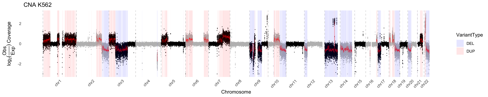

CNAplot.RmdTo make a CNA plot in pacbiowdlR, you need two files as input both of which are output in the pacbiowdlR pipeline: 1) a depth file output and 2) a variant file which denotes the copy alteration ranges.
There are three different methods used to visualize the delta values in your CNA plot. In each case, let
In the simplest method, the delta is computed as the difference between the observed score and the mean score over all positions. Mathematically, if the mean score is
then the delta for a given position is
This method highlights how much a given data point deviates from the overall average.
In this approach, a nonparametric regression (LOESS) is used to fit a smooth curve to the observed scores as a function of . Let the LOESS-fitted values be denoted by . Then, the delta is computed as the log2 ratio of the observed score to the fitted value:
This transformation emphasizes relative differences rather than absolute differences. Using the log ratio, you capture percentage-like changes in coverage relative to the locally expected value.
For the “fit” method, a linear regression model is used to predict the coverage score based on predictors such as GC content and repeat fraction. Suppose the model is given by
and let be the predicted (fitted) value from this linear model. Then, the delta is defined in the same way as for the LOESS method but using the fitted score:
Here, the log2 ratio provides a measure of how the observed score deviates from what is expected based on the linear relationship with GC content and repeat fraction.
Each method has its own advantage: the simple difference is easy to compute and interpret, while the log-ratio methods (“loess” and “fit”) provide a relative measure that can stabilize variance and better highlight proportional changes across the genome. The “loess” method is significantly slower, so we plot the other two here. The delta method produces a wider range of values, so we recommend not constraining the plot dimensions. Otherwise the dimensions can be specified as below.
library(pacbiowdlR)
depth_file <- system.file("extdata", "examples/K562.GRCh38.hificnv.depth.bw", package = "pacbiowdlR")
cna_calls <- system.file("extdata", "examples/K562.GRCh38.hificnv.vcf.gz", package = "pacbiowdlR")
CNAPlot(depth_bigwig_file = depth_file,
variant_file = cna_calls,
downsample = 0.1, method = "delta",
samplename = "K562")
CNAPlot(depth_bigwig_file = depth_file,
variant_file = cna_calls, method = "fit",
samplename = "K562", max_value = 3, min_value = -3)
In the below we define some colors and replot. Using these colors a black-colored fit line looks best
chrom_palette <- c(
"#FF0000", "#FF9900", "#FFCC00", "#00FF00", "#6699FF", "#CC33FF",
"#999912", "#999999", "#FF00CC", "#CC0000", "#FFCCCC", "#FFFF00",
"#CCFF00", "#358000", "#0000CC", "#99CCFF", "#00FFFF", "#ECFFFF",
"#9900CC", "#CC99FF", "#996600", "#666600", "#666666", "#CCCCCC",
"#79CC3B", "#E0EC3B", "#CCC99F"
)
CNAPlot(depth_bigwig_file = depth_file,
variant_file = cna_calls,
method = "fit", line_color = "black",
samplename = "K562", max_value = 3, min_value = -3, colors = chrom_palette)By default, CNAPlot will “accentuate” copy number changes in deleted
or duplicated regions by applying a weight to those regions outside of
variants. This effectively minimimizes the visualized variance in these
regions. This feature can be turned off, or modulated by adjusting the
weight via the outside_weight parameter. One can also
change the weighting of the inside_weight to further
maximize visualization. However it is critical to note that these
weights are applied AFTER estimating the y-axis values, therefore one
should interpret the values with caution.
CNAPlot(depth_bigwig_file = depth_file,
variant_file = cna_calls, outside_weight = 0.4, inside_weight = 2,
method = "fit", line_color = "black", max_value = 5, min_value = -5,
samplename = "K562", colors = chrom_palette)Using pacbiowdlR, one can take a deeper look at copy number
alterations. For example in Chr9 of the K562 data, we see regions of
signifiantly deleted DNA (as evidenced by coverage inference). We can
use the CNAPlot_Highlight function to discover genes
amplified in this region. Two additional objects are needed for gene
highlighting, a txdb and org annotation file.
CNAPlot_Highlight(depth_bigwig_file = depth_file,
txdb = TxDb.Hsapiens.UCSC.hg38.knownGene::TxDb.Hsapiens.UCSC.hg38.knownGene,
org = org.Hs.eg.db::org.Hs.eg.db, gene_delta_threshold = 2.5,
variant_file = cna_calls,
method = "fit", line_color = "black", chr_filter = "chr9",
samplename = "K562", colors = chrom_palette)One will not that there are regions that plot as having a 0 value for
DNA content. This results when the log2 ratio is infinitely negative and
are indicative of a complete loss of DNA in the region. This can be
confirmed using the delta method of visualization as shown
below. We can increase the number of events plotted using the
downsample parameter. Unsurprisingly the region lost
contains the tumor suppressors CDKN2A, CDKN2B.
CNAPlot_Highlight(depth_bigwig_file = depth_file,
txdb = TxDb.Hsapiens.UCSC.hg38.knownGene::TxDb.Hsapiens.UCSC.hg38.knownGene,
org = org.Hs.eg.db::org.Hs.eg.db, downsample = 0.5,
variant_file = cna_calls, max_value = 20,
method = "delta", line_color = "black", chr_filter = "chr9", highlight_genes = c("CDKN2A", "CDKN2B"),
samplename = "K562", colors = chrom_palette)